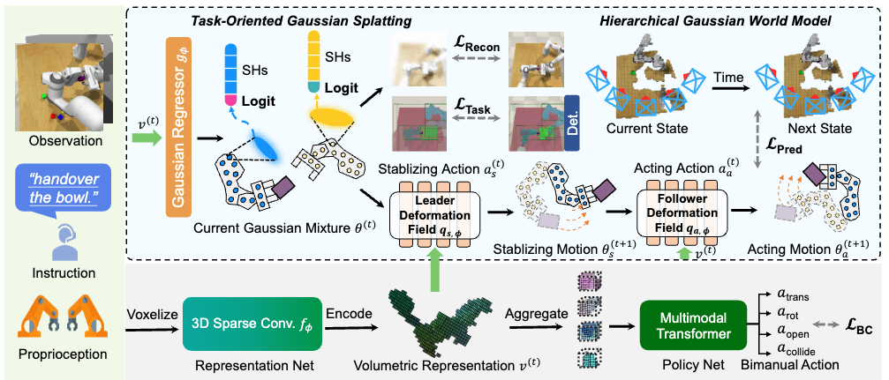
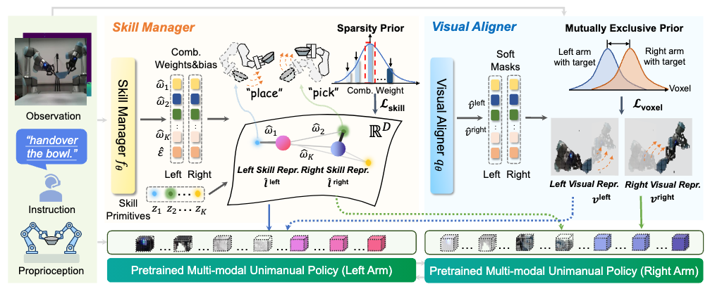

|
Publications and Preprints
* indicates equal contribution
|
|

|
CoT4AD: A Vision-Language-Action Model with Explicit Chain-of-Thought Reasoning for Autonomous Driving
Zhaohui Wang*,
Tengbo Yu*,
Hao Tang
Under Review.
|
|
|
ManiGaussian++: Dynamic Gaussian Splatting for Multi-task Bimanual Manipulation
Tengbo Yu*,
Guanxing Lu*,
Zaijia Yang*,
Haoyuan Deng,
Season Si Chen,
Jiwen Lu,
Wenbo Ding,
Guoqiang Hu,
Yansong Tang†,
Ziwei Wang
IROS 2025
[arXiv]
[Code]
We proposed ManiGaussian++, a novel framework that addresses the challenges of multi-task bimanual manipulation through hierarchical Gaussian world modeling.
|
|

|
AnyBimanual: Transferring Unimanual Policy for General Bimanual Manipulation
Guanxing Lu*,
Tengbo Yu*,
Haoyuan Deng,
Season Si Chen,
Yansong Tang†,
Ziwei Wang
ICCV 2025
[Project Page]
[arXiv]
[Code]
We introduced AnyBimanual, a framework designed to transfer pre-trained unimanual manipulation policies to multi-task bimanual manipulation with few bimanual demonstrations.
|
© Tengbo Yu
|